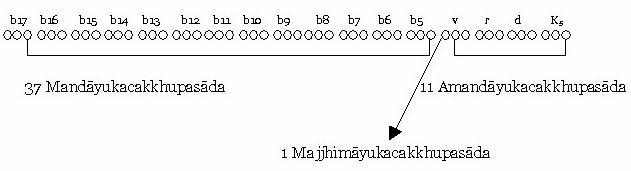
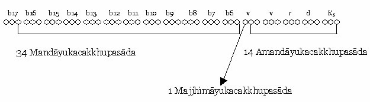

Bài 7 LÝ GIẢI LỘ NGŨ MÔN THỜI BÌNH NHẬT 1- TƯƠNG QUAN GIỮA VẬT VÀ TÂM: VẬT (vatthu) là chổ trú của THỨC (viññāṇa), năm đôi thức trú ở năm vật theo tương ứng (nhãn thức trú ở nhãn vật, nhĩ thức trú nơi nhĩ vật...), còn Ý vật (hadayavatthu) là nơi trú của Ý thức. Năm vật được định vị rõ ràng, riêng về Ý vật chưa có sự thống nhất rõ rệt. Theo các vị Luận sư như Ngài Anuruddha thì Ý vật là một số máu trong ngần nằm sâu ở chót trái tim, nên Ý vật có tên là hadayavatthu (hadaya: nghĩa là trái tim). Vị trí này gọi là Tiềm huyệt chứa một số máu trong ngần, số máu này rất ít và cũng luân lưu, rồi có số máu khác lấp vào. Theo các nhà khoa học thì sắc Ý vật chính là não bộ. Đức Phật không định vị rõ ràng sắc Ý vật, Ngài chỉ dạy rằng: "Yaṃ rūpaṃ nissayaṃ... tâm nương sắc nào, sắc ấy là Ý vật" . Trong bản Khái luận của ông Aung có nêu: "Đức Phật không nói gì về điểm này, Ngài không quả quyết sắc Ý vật là trái tim hay não bộ. Bộ Dhammasaṅgani (Pháp Tụ) danh từ hadayavattu cố tình không dùng đến, trong bộ Paṭṭhāna (Đại xứ), thay vì dùng hadayavatthu như là sắc Ý vật, Đức Phật chỉ dạy giản dị là "Yaṃ rūpaṃ nissayā". Nhưng dù là sắc trái tim hay não bộ, vẫn phát sanh vấn đề sau đây: Các vị Luận sư bảo rằng: "Khi cảnh ngũ như cảnh sắc chẳng hạn, hiện qua nhãn vật, khi ấy dòng hữu phần rung động tức khắc", nhưng rõ ràng Ý vật (hadayavattu) và nhãn vật (cakhupasāda) không nằm gần nhau, thậm chí có chúng sanh như Thiên tử Rāhu thì từ mắt đến trái tim có khoảng cách hàng ngàn cây số, vậy làm sao có sự đồng bộ như trên được? Thật vậy, khi cảnh sắc hiện rõ nơi sắc Ý vật, lập tức dòng hữu phần bị dao động ngay, tâm hữu phần ấy có tên gọi là bhavaṅgacalana (hữu phần Rúng động). Ngài Buddhaghosa đã viết trong Atthasālinī như sau: "Ekekaṃ ārammaṇaṃ dvāresu āpātamāgacchati, rūpārammaṇaṃ hi cakkhupasādaṃ ghaṭṭetvā taṃ khaṇaññeva manodvāre āpātamāgacchati, bhavaṅgacalanassa paccayo hotīti attho". "Khi một cảnh hiện rõ trong môn, như cảnh sắc hiện rõ trong nhãn môn, làm rung động những sát-na (tâm) nơi ý môn, do duyên được hiện rõ này, gọi là hữu phần Rúng động". Tuy vị trí giữa ý vật và nhãn vật có cách xa nhau, nhưng chúng và luồng hữu phần có thực tính pháp (sabhāvadhamma) tương quan mật thiết, ba pháp này có chung gốc là do nghiệp tục sinh tạo thành, ví như hương hoa, màu hoa, cánh hoa đều do cây hoa mà có. Việc tâm hữu phần bị dao động bởi cảnh sắc ở nhãn vật là điều hiển nhiên. Các ngài dùng hình ảnh hai cục đường để minh họa cho vấn đề này như sau: Trên mặt bàn có hai cục đường đặt cách nhau khá xa, một cục có ruồi bám, cục kia thì không, khi lấy tay chạm vào viên đường không có ruồi, ruồi ở viên kia hoảng hốt bay lên. Ruồi ví như dòng hữu phần, viên đường có ruồi ví như sắc Ý vật, viên đường không ruồi ví như nhãn vật, ngón tay chạm vào viên đường (không có ruồi) ví như cảnh sắc hiện rõ vào nhãn vật. Và đây là câu Pāli minh dẫn, trích từ Saccasaṅkhepa- atthakathā: "Ghaṭṭite aññavatthumhi. Nhãn vật trợ sanh nhãn thức ra sao? Trợ sanh cho nhãn thức chính là 49 đoàn nhãn vật ở giai đoạn Trụ (ṭhitipatta), để dễ hiểu chúng ta xác định 49 đòan nhãn vật ấy, lấy cột mốc là tâm Hướng ngũ môn (pañcadvāravajjanacitta) (vì nhãn thức sanh kế tiếp tâm Hướng ngũ môn). Như đã nói "sắc pháp có đời sống dài hơn danh pháp 17 lần", tức là đời sống của sắc pháp có 51 sát-na tiểu Theo quy luật của sắc pháp, mỗi sát-na tiểu có một đòan sanh lên một đòan diệt mất để có bình số là 51 đòan. Chúng ta có thể hiểu điều này qua ví dụ sau: Có nhà máy sản xuất sản phẩm, sản phẩm được tạo ra sẽ rơi trên đường băng, đường băng dài 51 khoảng, sản phẩm thứ nhất (tiểu sát-na sinh) rơi trên đường băng, tiếp theo sản phẩm thứ hai lại rơi trên đường băng sẽ đẩy sản phẩm thứ nhất tiến lên phía trước, sản phẩm thứ hai là tiểu sát na sinh, sản phẩm thứ nhất là tiểu sát-na trụ thứ nhất. Cứ như thế cho đến khi sản phẩm thứ nhất đến vị trí thứ 51, khi có sản phẩm thứ 52 xuất hiện, sản phẩm thứ nhất bị rớt khỏi đường băng (ám chỉ bị diệt mất), bấy giờ trên đường băng luôn luôn có 51 sản phẩm, khi một sản phẩm mới xuất hiện, lập tức có một sản phẩm rớt khỏi đường băng và đường băng bình số là 51 sản phẩm. Cảnh sắc và sắc thần kinh nhãn đều là sắc pháp nên chúng có tuổi thọ là 51 sát-na tiểu như nhau. Và như thế chúng có ba đối cách với nhau là: - Sắc thần kinh nhãn cùng diệt với cảnh sắc, gọi là majjhimāyukacakkhupasāda, như vậy đối với cảnh rất lớn, hai loại sắc này phải đồng sanh vào tiểu sát-na Sinh của tâm HPVQ. Đối với cảnh lớn, chúng phải đồng sanh vào sát-na HPVQ thứ nhất. - Sắc thần kinh nhãn diệt sau cảnh sắc, gọi là Amandāyukacakkhupasāda, như vậy đối với cảnh rất lớn hay cảnh lớn, sắc thần kinh nhãn này sanh chậm hơn cảnh sắc ít nhất 1 sát-na tiểu, tức là sanh sớm nhất cũng phải vào tiểu sát-na Trụ của HPVQ thứ nhất, chậm nhất là vào tiểu sát-na Diệt của tâm Hướng ngũ môn, đến tiểu sát-na Sinh của nhãn thức, sát-na này trở thành tiểu sát-na trụ thứ nhất sẽ trợ nhãn thức sanh lên. - Sắc thần kinh nhãn diệt trước cảnh Sắc, gọi là Mandāyukacakkhupasāda, như vậy đối với cảnh rất lớn hay cảnh lớn, sắc thần kinh nhãn này sanh trước cảnh sắc ít nhất 1 sát-na tiểu, tức là sanh chậm nhất cũng phải từ tiểu sát-na Diệt của tâm hữu phần trước sát-na tâm HPVQ, sanh sớm nhất là vào sát-na Diệt của tâm hữu phần thứ 17 kể từ sát-na Hướng ngũ môn trở về trước (xem đồ hình). Tóm lại: Đối với bất kỳ lộ nào, trước tiên phải tìm Majjhimāyukacakkhupasāda. Sắc thần kinh nhãn này luôn đồng sanh với cảnh sắc vào sát-na HPVQ đầu tiên (không thể sai khác được). Sắc thần kinh Nhãn nào sanh sau cảnh Sắc một sát-na tiểu, đó là Amandāyukacakkhupasāda. Sắc thần kinh Nhãn nào sanh trước cảnh sắc 1 sát-na tiểu, đó là Mandāyukacakkhupasāda. Những sắc thần kinh nhãn nào đồng sanh với nhãn thức, không kể là sắc thần kinh nhãn trợ sanh nhãn thức. Trước khi nhãn thức sanh lên là tâm Hướng ngũ môn, vậy ta lấy tâm Hướng ngũ môn làm cột mốc để tìm sắc thần kinh nhãn trợ sanh nhãn thức. Ba loại sắc thần kinh nhãn Majjhimāyuka – Amandāyuka – Mandāyuka đều có thể trợ sanh nhãn thức. Và tổng số ba loại sắc thần kinh này là 49 sát-na tiểu, Từ cột mốc Hướng ngũ môn tính trở về trước thêm 15 sát-na đại với sát-na tâm Hướng ngũ môn thành 16 sát-na đại (3 x 16 = 48 tiểu) và một sắc thần kinh nhãn ở vào sát-na Diệt của tâm hữu phần trước đó (xem hình vẽ), như thế tổng cộng là 49 đòan nhãn vật ở giai đoạn Trụ, gọi là ṭhitipattacakkhupasāda. Chúng ta nêu 2 sơ đồ sắc thần kinh nhãn trợ sanh nhãn thức theo Vatthupurejātapaccaya (Vật tiền sanh duyên) làm tiêu biểu. Trước tiên là sơ đồ sắc thần kinh nhãn trợ sanh nhãn thức ở cảnh rất lớn. ĐỒ THỊ CỦA CẢNH RẤT LỚN (atimahantārammaṇavīthi) Giai đoạn Trụ (ṭhitipatta) của sắc thần kinh nhãn gồm 49 sát-na tiểu. Hình 1  ĐỒ THỊ CẢNH LỚN (mahantārammaṇavīthi) Cảnh lớn có 2 HPVQ. Xem Hình 2 - Giai đoạn Trụ của sắc thần kinh nhãn:  Theo đồ thị cảnh rất lớn ta thấy: - Mandāyukacakkhupasāda có 37 sắc thần kinh nhãn, tức là lấy từ sắc nhãn vật sinh vào sát-na Diệt của tâm hữu phần thứ 13 (kể từ HPVQ tính ngược lại) cho đến sắc nhãn vật sinh vào sát-na Diệt của tâm hữu phần HPVQ (tức chỉ cho nhãn vật sinh và diệt trước cảnh sắc 1 sát-na tiểu). - Amandāyukacakkhupasāda có 11 sắc nhãn vật, tính từ sát-na Trụ của HPVQ đến sát-na diệt của tâm Hướng ngũ môn. - Majjhimāyukacakkhupasāda có 1. Tổng cộng là 49 sắc thần kinh nhãn ở giai đoạn Trụ (ṭhitipatta). Theo đồ thị cảnh lớn, tâm lộ có 2 HPVQ thì: - 34 mandāyukacakkhupasāda là tính từ sát-na Diệt của tâm hữu phần trước HPVQ đến sát-na Diệt của tâm hữu phần thứ 12, kể từ HPVQ tính ngược lại. - 14 Amandāyukacakkhupasāda, là tính từ sát-na Trụ của HPVQ đến sát-na Diệt của tâm Hướng ngũ môn. - 1 Majjhimāyukacakkhupasāda. Tổng cộng là 49 sắc thần kinh nhãn trợ sanh nhãn thức ở giai đoạn Trụ. 2- TƯƠNG QUAN GIỮA CẢNH VÀ TÂM. a) Tính chất của cảnh. Cảnh có hai lọai: cảnh tốt (iṭṭhārammaṇa) và cảnh xấu (aniṭṭhārammaṇa). Tùy theo mức độ tốt hay xấu, cảnh được phân thành bốn loại: cảnh cực tốt, cảnh tốt, cảnh xấu và cảnh rất xấu. Muốn nhận định cảnh tốt hay xấu phải dựa trên năm yếu tố: . Đây là hạng người tiêu biểu cho đại chúng, là yếu tố đầu tiên để phân định tốt hay xấu. Lẽ thường bậc cao nhân hay người có sự suy xét sâu, dù cảnh có như thế nào cũng ít bị dao động, hoặc áp chế được ngoại cảnh hoặc không bị cảnh tác động. Chỉ có thường nhân (majjhima puggala) mới có "cảm tính thiên lệch" đối với cảnh nhận biết. Người bình thường hằng có khuynh hướng thiên về tình cảm hơn là lý trí, "thích thì cho là tốt, không thích thì bảo xấu", màu trắng là "trinh nguyên" của người này, nhưng là "tang tóc" cho kẻ khác, y phục nhiều màu sẽ xinh đẹp đối với kẻ yêu thích nhưng lại diêm dúa với người không ưa. Cảnh yên tĩnh thích hợp đối với người sống về nội tâm, nhưng lại đáng sợ cho những tâm hồn háo động ... Do đó, người hưởng cảnh là một điều kiện không thể thiếu trong sự nhận định cảnh tốt hoặc xấu. 2/- Tâm Dị thục quả (vipākacitta) Trước cảnh thực tính (sabhāvārammaṇa) tâm quả dị thục sanh khởi theo quy luật tự nhiên cho dù người hưởng cảnh thích hay không thích. Tức là đối với cảnh tốt hay rất tốt (theo thực tính) thì tâm quả dị thục thiện sanh lên theo thứ tự năm thức quả thiện, Tiếp thâu quả thiện, Quan sát quả thiện. Trái lại cảnh xấu hoặc cực xấu thì tâm quả dị thục bất thiện sanh lên theo thứ tự năm thức quả bất thiện, Tiếp thâu quả bất thiện, Quan sát quả bất thiện. Ta không thể y cứ vào đổng lực để nhận định là tốt hay xấu được, có nhiều trường hợp đổng lực hưởng cảnh không tương xứng, cảnh tốt nhưng đổng lực lại bất thiện, như một ngoại giáo đồ nhìn thấy Đức Thế Tôn với 32 vẻ đẹp, anh ta đón nhận hình ảnh cao quý khả kính ấy bằng tâm quả dị thục thiện, nhưng đổng lực lại là tâm sân chẳng hạn. Có khi cảnh xấu hoặc cực xấu, nhưng đổng lực lại là thiện, như vị Tỷ kheo tu thiền đề mục tử thi, xác chết chương sình là cảnh cực xấu, nhưng đổng lực lại là thiện thọ xả hoặc thiện thọ hỷ khi có ấn tướng (nimitta). Do đó, ta phải dựa vào tâm quả dị thục để nhận định cảnh tốt hay xấu theo thực tính pháp (sabhāvadhamma). 3/- Môn (dvāra). Môn cũng là một yếu tố để nhận định cảnh. Khi đối xúc với cảnh, mỗi môn nhận định cảnh theo tính cách riêng của chúng. Cùng một cảnh, đối với môn này là tốt nhưng trở nên đáng ghét đối với môn kia, như cục phẩn chẳng hạn, khi áp vào Thân môn ta có thể có cảm giác lạc, khá êm ái (vừa ấm ấm, vừa mềm mềm), nhưng đối với mắt hay mũi thì đáng ghê tởm. Như vậy, rõ ràng với Thân môn cục phẩn là tốt, với nhãn hay tỷ môn cục phẩn trở thành xấu. Hoặc là một viên đá hoa văn xinh đẹp với mắt, nhưng khi chạm vào thân đau đớn, nó trở thành xấu. Do vậy, môn cũng góp phần vào việc nhận định cảnh. 4/- Khía cạnh sai biệt của cảnh. Chính bản thân của cảnh cũng là 1 yếu tố trong sự nhận định cảnh, mà khía cạnh sai biệt của cảnh là chủ yếu. Như người có ngoại hình xinh đẹp nhưng tính tình độc ác, gian ngoa, là nỗi bất hạnh cho những ai gần gũi. Trái lại, người tuy có ngoại hình xấu xí khó coi nhưng tính tình hào sảng, nhân hậu, đó là niềm hạnh phúc cho những ai thân cận. Hoặc giả, người có nhan sắc thiên kiều bá mỵ, nhưng thân luôn toát ra mùi xú uế ... Vì thế ta phải lưu ý đến khía cạnh mâu thuẫn của chính đối tượng để nhận định cảnh tốt hay xấu. 5/- Thời điểm (kāla). Thời điểm cũng có góp phần vào sự nhận định cảnh. Vào mùa hè nóng oi bức thì ngọn lửa là hung thần tàn bạo, trái lại mùa đông rét mướt ngọn lửa trở thành nàng tiên hiền dịu khả ái. Ngọn gió là bạn hiền giữa trưa hè và trở thành gã tàn nhẫn trong đêm đông lạnh buốt... Vậy muốn nhận định cảnh tốt hay xấu, ta phải lưu ý đến thời điểm chúng xuất hiện. b) Tương quan giữa cảnh và tâm. 1/- Năm trần cảnh cùng hiện khởi .Khi nói "năm trần cảnh cùng hiện khởi" là nhấn mạnh đến môi trường hưởng thụ ngũ dục, dĩ nhiên là đề cập đến nơi trú ngụ có đầy đủ tiện nghi vật chất. Trong trường hợp này không xác định rõ tâm lộ của cảnh nào sanh khởi trước tiên được. Thông thường khi nói đến sự diễn biến các tâm lộ vào thời điểm này, ta phải nhớ rằng: "Mỗi tâm chỉ biết một cảnh ở mỗi thời điểm", đồng thời "trong mỗi thời điểm chỉ có một cái tâm mà thôi". Với 1 cảnh sắc, 1 tâm lộ nhãn môn không thể ghi nhận cảnh sắc ấy đầy đủ được, việc ghi nhận đầy đủ chi tiết (như chi tiết một bức ảnh chẳng hạn) đòi hỏi rất nhiều tâm lộ nhãn môn kế tục nhau để đảm nhận. Thấy được tổng thể là một lộ, nhận biết từng chi tiết, từng đường nét, màu sắc đậm nhạt ... phải do nhiều tâm lộ nhãn môn khác nhau sanh khởi (dù cũng chỉ là lộ nhãn môn cơ bản). Nhưng do tốc độ diễn hoạt của tâm quá nhanh nên ta cứ ngỡ rằng: "Chỉ một cái nhìn đơn giản là đã nắm bắt trọn vẹn 1 hình ảnh trước mắt". Ở môi trường ngũ dục đã nêu, tùy theo Dục ái (sở thích) của người ấy đối với cảnh nào mạnh, y sẽ nhận lãnh cảnh ấy trước, nếu y có thị hiếu về cảnh sắc, cảnh sắc sẽ réo gọi trước tiên, thiên về âm thanh thì cảnh thinh mời mọc, thích cảnh vị sẽ chú ý ngay đến vị dục, yêu hương thơm thì cảnh mùi chào đón, cần thân được an lạc thì chỗ ngồi hay chỗ nằm hấp dẫn y ngay. Tâm lộ thích ứng với trần cảnh nổi bật ấy sẽ khởi lên trước tiên, sau đó các trần cảnh khác lần lượt tiếp nối theo sau khởi sinh. Nếu đương sự là người không có sở thích gì đặc biệt, một trần cảnh nổi bật nhất trong năm trần cảnh tại hiện trường sẽ cuốn lấy anh ta, như một tiếng động lớn, 1 cánh hoa sặc sỡ, một mùi hương nồng nặc... Tóm lại, vấn đề diễn biến tâm lộ trong môi trường ngũ dục tùy thuộc vào dục ái (thị hiếu) cá biệt đối với cảnh nhiều hay ít, hoặc do sức tác động của cảnh mạnh hay yếu. 2/- Hấp lực của cảnh đối với tâm Hướng ngũ môn. Trong lộ ngũ, tâm Hướng ngũ môn (pañcadvāravajjanacitta) là tâm khách sinh trước tiên trong tâm lộ, có câu hỏi rằng: Cảnh sắc và sắc thần kinh nhãn trợ sanh cho nhãn thức, vì sao tâm Hướng ngũ môn lại sinh trước tiên? Cảnh sắc hiện rõ nơi nhãn vật có sức mạnh cắt cảnh Chủ, khiến tâm hữu phần không thể sanh khởi. Tuy nhiên ảnh hưởng của hữu phần Dứt dòng đối với tâm sanh kế tiếp vẫn còn (anantarapaccaya - Vô gián duyên) vì hữu phần thuộc Ý quyền, nên tâm sanh kế tục vẫn trú tại ý vật. Cảnh sắc chiếu vào hữu phần, nhưng tại Ý vật chỉ là phản ánh cảnh sắc đang có ở nhãn vật mà thôi, nhãn lộ khi ấy chưa khai mở, do đó tâm này phải nằm tại sắc Ý vật hướng về nhãn môn nhận cảnh sắc, đồng thời có phận sự khai mở nhãn lộ, vì thế tâm này còn có tên là manasikāracittavīthi (tác ý thành tâm lộ). Tâm này có khả năng hướng về cả năm môn nên có tên gọi là pañcadvāravajjanacitta (tâm Hướng ngũ môn). Một điều nữa, sở dĩ tâm Hướng ngũ môn hướng về nhãn môn, là do hấp lực của cảnh sắc kích tác vào sát-na hữu phần Dứt dòng. Ở sát-na tâm Hướng ngũ môn, cảnh sắc lại tác động một lần nữa cộng thêm sức mạnh của nhãn quyền (sát-na tiểu thứ 25 của giai đoạn trụ) và thế là nhãn thức sanh lên tại nhãn vật. Có ví dụ sau đây để minh họa vấn đề này: một người đang đứng trong nhà, có tiếng động bên ngoài, y đưa mắt hướng về phía ấy, thấy bạn đang vẫy gọi, y bước ra tiếp bạn. Người đứng trong nhà ví như hữu phần, nhà ví như sắc Ý vật, tiếng động ví như hữu phần Rúng động bị kích tác, đưa mắt về phía ấy ví như tâm Hướng ngũ môn, người bạn ví như cảnh sắc, vẫy gọi ví như bị nhãn quyền tác động, bước ra ngoài tiếp bạn ví như nhãn thức sanh khởi tại nhãn vật. Mặt khác, tuy cảnh sắc, ánh sáng và nhãn vật đã có sức mạnh đầy đủ, nhưng nhãn thức còn bị chướng ngại (palibodha), nên chưa thể sanh lên được, đó là: Do vật. Nhãn thức chỉ độc sanh nơi sắc nhãn vật và chỉ đảm trách nhiệm vụ khiêm tốn là THẤY mà thôi, những tâm còn lại xử lý cảnh sắc lại nằm ở sắc Ý vật, giữa nhãn vật và Ý vật lại cách xa, để cho nhãn thức sanh ở nhãn vật phải có "nhịp cầu". Như ngọn lửa của cây đèn đang cháy, một mảnh giấy ở trên, để ngọn lủa hiện ra trên mảnh giấy, phải có hơi nóng từ ngọn lửa cây đèn tích tụ nơi mảnh giấy, hơi nóng là "nhịp cầu" giữa hai ngọn lửa, chính tâm Hướng ngũ môn là nhịp cầu giữa tâm hữu phần Dứt dòng nơi Ý vật và nhãn thức ở nhãn vật. Do môn. Tuy cảnh sắc đã rõ ràng, nhưng "ngõ vào" còn đóng kín, cần phải mở cửa để nhận cảnh sắc, khởi sanh tâm lộ. Đảm trách vai trò này, ngoài tâm Hướng ngũ môn (đối với lộ ngũ) không còn tâm nào khác, nên nó phải sinh trước tiên trong lộ tâm khách. Có ví dụ sau đây: Căn phòng có treo bức tranh đẹp, nhưng căn phòng đóng kín, một đoàn 7 người đi đến, người thứ nhất mở cửa phòng, người thứ hai nhanh chân bước vào căn phòng, năm người còn lại đứng bên ngoài, ngắm bức tranh. Người thứ nhất ví như tâm Hướng ngũ môn, người thứ hai ví như nhãn thức, 5 người còn lại ví như 5 loại tâm khách sanh kế tiếp nhãn thức, căn phòng ví như nhãn vật, vị trí bên ngoài ví như sắc Ý vật, bức tranh ví như cảnh sắc. Do nhân trợ sanh. Ba nhân trợ sanh: cảnh sắc, nhãn vật và ánh sáng đã có nhưng manasikāra (sự chú ý đến cảnh) chưa hiện rõ, do vậy nhãn thức chưa sanh khởi được. Trong 4 nhân trợ sanh nhãn thức, thì manasikāra (tác ý) là chủ yếu vì đó là loại danh pháp tương ưng với nhãn thức. Tác ý là danh pháp, muốn có được Tác ý phải khởi từ danh pháp, ví như người muốn có gỗ quý phải tìm ở rừng, muốn có trang sức đẹp phải đến tiệm kim hoàn. Theo quy luật: tâm sanh trước sẽ trợ tâm sanh sau bằng Anantarapaccaya (Vô gián duyên), như vậy, Tác ý trợ sanh cho nhãn thức chính là Tác ý trong tâm trước tâm nhãn thức. Cảnh sắc làm dao động được hữu phần là do mãnh lực của nhãn quyền, nhưng manasikāra ở hữu phần Dứt dòng còn muội lược, chưa đủ sức trợ sanh cho nhãn thức, nhãn quyền lại tiếp tục tác động vào tâm kế tiếp (tức tâm Hướng ngũ môn), bấy giờ Tác ý nơi tâm Hướng ngũ môn có đủ sức mạnh trợ sanh cho nhãn thức. Mặt khác, tâm Hướng ngũ môn đang hướng về nhãn vật, nên việc trợ sanh này dễ dàng hơn so với tâm hữu phần Dứt dòng. Tóm lại, sở dĩ tâm Hướng ngũ môn phải sanh trước nhãn thức là vì: - Bắt nhịp cầu cho nhãn thức sanh khởi tại nhãn vật. Cảnh ngũ đối với tâm quả dục giới. Tâm quả Dục giới đối với cảnh ngũ thực tính (sabhāvapañcārammaṇa) có 1 quy trình cố định là: - Đối với cảnh thực tính cực tốt (sabhāviṭṭhārammaṇa), thì từ Ngũ thức, Tiếp thâu, Quan sát và Na cảnh đều là tâm Quả thiện Dục giới, trong đó tâm Quan sát và tâm Na cảnh đều là Hỷ thọ. - Đối với cảnh thực tính tương đối tốt, cũng là những tâm Quả thiện Dục giới như trên, nhưng tất cả đều là xả thọ. - Đối với cảnh thực tính bất toại (sabhāvaniṭṭhārammaṇa) thì Ngũ thức, Tiếp thâu, Quan sát và Na cảnh đều là tâm Quả bất thiện Dục giới. Cảnh ngũ đối với đổng lực tâm. Riêng về tâm đổng lực (javanacitta) các Ngài Giáo Thọ sư bảo rằng: "Chúng sanh khởi bất định". Có ba loại đổng lực Dục giới: đổng lực bất thiện, đổng lực thiện và đổng lực Hạnh (kriyājavanacitta). Chỉ có đổng lực Hạnh của vị Thánh A La Hán sanh khởi theo khuôn mẫu nhất định, vì các Ngài đã thành đạt niệm - tỉnh giác (satisampajaññā) viên mãn, các Ngài đã huân tập tâm trở nên thuần khiết, không còn bị cảnh tốt hay xấu làm xáo trộn đổng lực tâm. Ví như ngựa tốt đã khéo huấn luyện thiện xảo, con đường xanh mượt cỏ nhung hay gồ ghề lởm chởm đá, cũng không gây chướng ngại đến gió ngựa phi. Vị A La Hán khi nhận cảnh rất tốt thì đổng lực Hạnh hỷ thọ (somanassasahagata kriyājavana citta) khởi lên, nếu nhận cảnh tốt hay cảnh bất mỹ thì đổng lực Hạnh xả thọ (upekkhāsahagata kriyājavana citta) khởi lên. Đây là quy luật cố định hiện khởi đổng lực Hạnh của vị Thánh Lậu tận. Từ khuôn mẫu này, ta suy ra nụ cười của vị A La Hán. Nụ cười của vị thánh Vô lậu Đức Phật hay Vị A La Hán khi thấy cảnh không tốt như Đức Phật thấy cảnh vua Suppabuddha sẽ bị đất rút sau 7 ngày, hay Đức Mogallāna (Mục Kiền Liên) thấy ngạ quỷ ở núi Gijjhakūṭa (Kỳ Xà Quật) các Ngài vẫn có thể mỉm cười. Phải chăng các Ngài dùng đổng lực Hạnh hỷ thọ để ghi nhận những hình ảnh ghê tởm, xấu xí ở trên? Thật ra, khi thấy cảnh bất mỹ, các Ngài khởi lên đổng lực Hạnh xả thọ, trải qua hàng trăm hàng ngàn lộ như thế, sau đó các Ngài quán xét về hạnh nghiệp đã huân tập của ngạ quỷ ấy cũng bằng đổng lực Hạnh xả thọ với hàng trăm hàng ngàn lộ quán xét. Tiếp đến Ngài quán xét đến tình trạng an ổn tuyệt đối của mình, không còn bị luật sanh tử luân hồi chi phối qua Thượng pháp tánh đã thành tựu viên mãn, hàng trăm hàng ngàn lộ quán xét này cũng là đổng lực Hạnh xả thọ. Khi nhận thấy Thượng pháp tánh đã viên mãn, các ngài mới hoan hỷ mỉm cười, bấy giờ mới là đổng lực Hạnh hỷ thọ sanh khởi. Vì tốc lực tâm sanh diệt quá mau lẹ, tâm lộ biết cảnh ngạ quỷ, tâm lộ quán xét hạnh nghiệp của ngạ quỷ, tâm lộ quán xét tình trạng an ổn và biết cảnh Thượng pháp tánh nối đuôi nhau sanh khởi liên tục chặt chẽ, nên có sự lầm lẫn cho rằng vị Thánh Vô Lậu nhận cảnh bất mỹ bằng đổng lực Hạnh hỷ thọ. Cảnh Thượng pháp tánh là cảnh cực tốt mới phát sanh đổng lực Hạnh hỷ thọ, từ đó phát sanh nụ cười của vị Thánh Vô lậu, còn những cảnh ngạ quỷ ... là do đổng lực Hạnh xả thọ ứng xử. Đổng lực thiện, đổng lực bất thiện có tính bất định ra sao? Đối với cảnh ngũ, đổng lực thiện và đổng lực bất thiện lại có tính bất định. Có nhiều trường hợp cảnh rất tốt hay tốt, nhưng đổng lực lại bất thiện, như có người thấy người khác tổ chức Đại thí sự, khởi sanh tâm bất bình (vị quan đại thần của vua Pasenadi không hài lòng khi thấy Đức vua tổ chức Đại thí Vô song), hoặc thấy lâu đài mỹ lệ khả ái lại sanh tâm bất thiện tham, như Thái tử Ajātasattu (A xà Thế) muốn chiếm đoạt lâu đài của Trưởng giả Jotika. Trái lại, khi thấy cảnh xấu lại phát sanh tâm thiện, như thấy người ăn xin khốn khổ, thân thể đầy thương tật, phát sanh tâm từ bi … Nói chung, bất luận là cảnh tốt hay xấu, nếu khởi lên đổng lực bất thiện là do Tác ý không khéo (ayoni so manasikāra), còn khởi lên đổng lực thiện thì do có tác ý khéo (yoni so manasikāra), chính tâm Đoán định là chủ yếu trong giai đoạn này, tức là ngay vào sát-na tâm Đoán định, nếu có tác ý khéo thì đổng lực thiện sanh khởi, nếu là tác ý không khéo thì đổng lực bất thiện sanh khởi. Tác ý khéo có được là do huân tập niệm - tỉnh giác (satisampajaññā), còn tác ý không khéo do thường thân cận với pháp điên đảo (vipallāsa dhamma). Tâm Đoán định trong lộ ngũ chính là tâm Hướng ý môn (manodvāravajjana citta). Do mở cửa cho đổng lực sanh khởi, nên tâm Hướng ý môn còn có tên gọi là manasikārajavanavīthi (Tác ý thành đổng lực). Tâm Đoán định đối với đổng lực giống như người đầu bếp đối với ông chủ, nếu y sắp đặt món vật thực tốt (tác ý khéo), người chủ sẽ dùng loại vật thực hữu ích (đổng lực thiện), nếu y sắp đặt loại vật thực có hại (tác ý không khéo), người chủ dùng vật thực ấy sẽ trở nên bịnh hoạn (đổng lực bất thiện) và người chủ chỉ dùng loại vật thực do y sắp đặt mà thôi (ám chỉ tâm đổng lực chỉ sinh khởi khi tâm Hướng ý môn đã sanh trước). 3- TƯƠNG QUAN GIỮA CẢNH VÀ THỌ. Theo lý Vô ngã, tâm sở Tư (cetanācetasika) là kẻ tạo tác, tâm sở Thọ (vedanācetasika) là kẻ hưởng quả. Tuy bất tương ứng với cảnh qua khiá cạnh thiện hay bất thiện, nhưng sự hưởng cảnh ở đây chính là vai trò của Thọ (vedanā). Đối với cảnh cực tốt, phát sanh hỷ thọ (somanassavedanā) (dù đổng lực là thiện hay bất thiện). Đối với cảnh tốt hoặc xấu, phát sanh xả thọ (upekkhāvadanā) (dù đổng lực là thiện hay bất thiện). Đối với cảnh cực xấu phát sanh ưu thọ (domanassavedanā). Cách lãnh nạp đối tượng của thọ như thế gọi là tương ứng với cảnh qua khía cạnh Thọ. Còn sự bất tương ứng đối với cảnh qua khía cạnh thọ là: - Đối với cảnh cực tốt thay vì hỷ thọ lại khởi lên xả hoặc ưu thọ. Dĩ nhiên điều này hiện rõ nhất đối với phàm nhân, là người còn đầy đủ ba pháp điên đảo (vipallāsadhamma): Tưởng điên đảo (saññāvipallāsa), Kiến điên đảo (diṭṭhivipallāsa) và Tâm điên đảo (cittavipallāsa). Pháp điên đảo là cơ sở sinh bất thiện tâm, niệm - tỉnh giác (satisampajaññā) là cơ sở sinh khởi thiện tâm, vì thế Thọ cũng mang tính thiện hay bất thiện. Tưởng điên đảo áp chế trí (ñāṇa) hỗ trợ cho Kiến (diṭṭhi) vững mạnh, kiến điên đảo đối lập với trí, giúp tâm điên đảo vững mạnh, ba pháp này lại trợ giúp cho Ái (taṅhā) và Si (moha) sanh khởi. Trong 3 pháp điên đảo, Tưởng điên đảo có ảnh hưởng rất lớn đối với thọ bất thiện. 1/- Thọ bất thiện đối với cảnh, Có 10 trường hợp thọ không tương ứng với cảnh như sau: 5 trường hợp do pháp điên đảo (vipallāsa dhamma), 3 trường hợp do Si, 1 do Mạn (māna), 1 do Sân.
Đối với cảnh cực tốt. a) Do kiến điên đảo b) Do pháp điên đảo (vipallāsadhamma) chi phối khởi lên xả thọ bất thiện đối với cảnh cực tốt, như trường hợp Tăng tín đồ Phật giáo, không quan tâm đến tinh hoa Phật học như học Siêu Lý, hành Minh sát ... họ cho đó là viễn vông, mơ hồ, không thiết thực, nên xao lãng trong pháp học lẫn pháp hành. Khi gặp những cảnh này, họ khởi lên một thứ tâm thản nhiên nhẹ nhàng, hay một loại tâm si hoài nghi, hoặc tâm si phóng dật. Và họ thích thú say mê chạy theo thế học bên ngoài. Đối với cảnh tốt. c) Do pháp điên đảo chi phối, khởi lên hỷ thọ bất thiện đối với cảnh tốt, như người háu ăn đang cơn đói, gặp món vật thực tương đối ngon, y vui mừng ra mặt. Đối với cảnh rất xấu. d) Do pháp điên đảo chi phối, khởi lên hỷ thọ bất thiện với cảnh rất xấu, như vui mừng trước xác chết đẫm máu của kẻ thù, hoặc thích thú trước cảnh oằn oại rên xiết của tội nhân đang bị hành hình. e) Do pháp điên đảo chi phối, khởi lên xả thọ trong cảnh cực xấu, như Đao phủ thủ thản nhiên chặt đầu tử tội, hoặc Đạo tỳ thản nhiên tẩn liệm xác chết.
f) Do Si tác động khởi lên ưu thọ trước cảnh cực tốt hay tương đối tốt, như có người không hiểu giá trị của việc học Adhidhamma hay tu tiến Chỉ - Quán, nên tỏ ra khó chịu, bất bình khi thấy người khác học Siêu Lý, hành Minh sát, cho rằng: lập dị, hoài công ... g) Do Si tác động khởi lên xả thọ bất thiện đối với cảnh cực tốt, như người chưa từng thấy ngọc quý, tình cờ gặp ngọc cho là viên sỏi đẹp, khởi sanh 1 loại tâm tham thản nhiên nhẹ nhàng, anh nhặt về nhà chơi. h) Do Si chi phối khởi lên hỷ hoặc xả thọ bất thiện với cảnh cực xấu hoặc cảnh tương đối xấu, như trường hợp đứa bé vui đùa với phẩn, hay vì không biết bọn cướp dữ, thản nhiên nhập đoàn với chúng.
i) Do Mạn (māna) chi phối khởi lên xả thọ bất thiện trong cảnh cực tốt, như người có địa vị cao được mời dự tiệc, trên bàn đầy sơn hào hải vị thay vì thích thú như bao ngưới, y tỏ ra lãnh đạm thờ ơ vì nghĩ rằng: Ta không nên làm giảm giá trị của mình.
j) Do Sân chi phối, có đổng lực xả thọ bất thiện đối với cảnh cực tốt, như người đang có tâm sự buồn, trước cảnh lễ hội rực rỡ họ chẳng màng đến, đón nhận cảnh với tâm trạng thờ ơ. 2/- Thọ thiện với cảnh. Dù đối với cảnh nào, thọ thiện khởi lên luôn dựa vào nền tảng niệm - tỉnh giác . Có ba trường hợp như sau: a) Do Niệm - tỉnh giác khởi lên thiện xả thọ trong cảnh cực tốt. Như trường hợp vị Tỷ kheo đang hành đề mục "vật thực bất tịnh", cho dù đó là cao lương mỹ vị, vị ấy vẫn thản nhiên ghi nhận. Hoặc có hành giả đang tụ tập về "bất tịnh tướng", trước những trần cảnh hấp dẫn, vị ấy vẫn thản nhiên. b) Do Tín (saddhā) cường mạnh hay niệm - tỉnh giác khởi lên thiện thọ hỷ trong cảnh tương đối tốt. Như người dồi dào đức tin, trông thấy đoàn Chư Tăng, liên tưởng đến Đức Phật và chư Thánh Tăng thời xưa, phát tâm hoan hỷ, hay hoan hỳ với thí sự của người khác. c) Do Niệm - tỉnh giác khởi lên thiện xả thọ hoặc hoặc hỷ thọ trước cảnh cực xấu. Như vị Tỷ kheo tu Quán về đề mục TỬ THI, sẽ vui mừng khi gặp xác chết hay thản nhiên quan sát xác chết. 4- TƯƠNG QUAN GIỮA THỌ NA CẢNH, THỌ ĐỔNG LỰC VÀ CẢNH. Tâm Na cảnh thuộc tâm quả Dục giới, chúng phải sinh khởi tương ứng với cảnh thực tính (sabhārammaṇa), tức là: - Cảnh cực tốt, Na cảnh là tâm quả thiện thọ hỷ. Các Ngài bảo rằng: "đổng lực và Na cảnh có cùng một loại thọ (ngoại trừ đổng lực sân)" Như vậy, chúng ta nhận định sự tương quan như sau: - Cảnh cực tốt, có tâm đổng lực hỷ thọ thì có tâm Na cảnh hỷ thọ, không có tâm đổng lực hỷ thọ thì không có tâm Na cảnh. - Cảnh tốt và cảnh bất toại có tâm đổng lực hỷ thọ, sẽ không có tâm Na cảnh, tâm Na cảnh xả thọ sẽ có khi có tâm Đổng lực thọ xả, hoặc thọ ưu. Tâm Na cảnh trong các cảnh - Cảnh cực tốt, tâm Na cảnh là một trong năm tâm quả dục giới thọ hỷ. GIẢI THÍCH. Tâm quả dục giới là thành quả của tâm đổng lực bất thiện hay thiện dục giới, tâm quả thiện luôn luôn nhận cảnh tốt, ngược lại tâm quả bất thiện luôn luôn nhận cảnh xấu. Đây là quy luật của nghiệp quả (kamavipākaniyāma). Khi cảnh cực tốt, cho dù có tâm đổng lực tham thọ hỷ, tâm Na cảnh vẫn là một trong năm tâm quả thiện hỷ thọ. Trong thời điểm này tính chất thiện hay bất thiện của đổng lực không ảnh hưởng đến tâm Na cảnh, tâm Na cảnh chỉ bị ảnh hưởng của thọ đổng lực chi phối mà thôi. Tương tự đối với cảnh tốt, cho dù tâm đổng lực là bất thiện tham xả thọ, sân hay si hoặc là tâm đại thiện xả thọ, tâm Na cảnh vẫn là một trong 5 quả thiện xả thọ. Đối với cảnh cực xấu hay xấu, cho dù có đổng lực là thiện xả thọ, tâm Na cảnh vẫn là tâm Quan sát thọ xả quả bất thiện. -ooOoo- Ðầu trang | Mục lục | 01 | 02 | 03 | 04 | 05 | 06 | 07 | 08 | 09 | 10 | 11 | 12 | 13 | 14 | 15 | 16 | 17 | 18 | 19 | 20 | 21 | 22 | 23 | 24 | 25 |